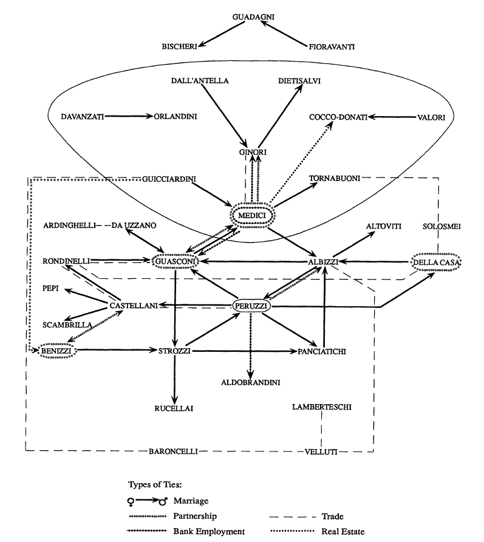
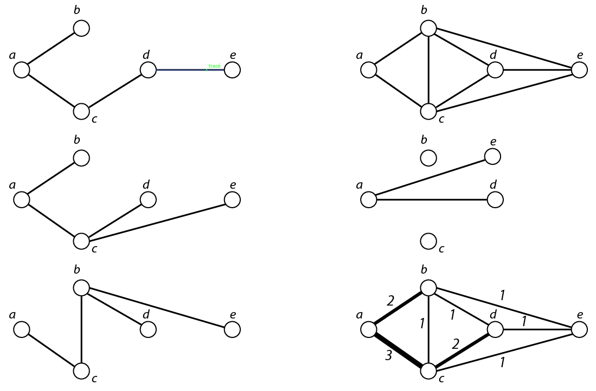

8 Analyser des réseaux multiplexes
Un réseau multiplexe ou multi-couches (multilayers) est un réseau comprenant un ensemble de sommets \(V\) et un ensemble de relations différentes entre ces sommets (\(E_1\), \(E_2\),…, \(E_n\)). Certaines relations peuvent être orientées et d’autres non, certaines peuvent être valuées et d’autres non.
8.1 Agréger ou comparer
La méthode d’analyse la plus couramment utilisée est la transformation de ce réseau multiplexe en réseau simple, éventuellement valué. La tactique suppose tout d’abord de transformer les couches une à une pour que chacune soit du même type en ce qui concerne la valuation des liens et l’orientation. L’étape suivante consiste à agréger les couches, en les pondérant ou non en fonction des données étudiées, afin de produire un réseau synthétique. On obtient un réseau valué qu’il est possible d’analyser avec les méthodes vues dans les précédents chapitres.
Exemple : dans son article, Zachary (1977) observe les interactions entre des membres d’un club de karaté pendant trois ans. Il étudie notamment les relations en dehors du club et définit huit contextes différents donnant lieu à huit types de relations. Ces différentes couches sont ensuite empilées pour donner une matrice valuée synthétisant ces relations.
Une autre option fréquemment utilisée est d’analyser chaque couche indépendamment les unes des autres puis d’interpréter de manière synthétique les différents résultats.
Exemple : Padgett and Ansell (1993) étudient dans leur article neuf types de relations (familiales, économiques, politiques, amicales) entre 92 familles florentines au début du XVe siècle. Les liens matrimoniaux et économiques sont considérés comme des liens forts ; les matrices correspondantes sont soumises à des méthodes de blockmodeling ; idem pour les liens politiques et amicaux considérés comme des liens faibles. Les scores de centralisation des différentes couches sont comparés sur les réseaux symétrisés et rendus binaires.

Cette figure est extraite de l’article de Padgett et Ansell (1993, p. 1276). Comme le précisent les auteurs, les noms indiqués ne sont pas des noms de familles mais ceux des familles dominantes au sein des blocs trouvés par l’analyse et un lien entre blocs signifie qu’au moins deux liens du type indiqué existent entre deux blocs familiaux. Les jeux de données disponibles en ligne ne proposent que cette version agrégée des données construites par les auteurs.
Il est bien entendu possible de combiner ces deux approches en analysant chaque couche de manière indépendante puis un réseau de synthèse.
8.2 Conserver la multiplexité des liens
Les méthodes d’analyse des réseaux multiplexes ne sont pas stabilisées et de nombreuses propositions sont faites chaque année. Ce qui suit est donc est sélection très partielle des méthodes possibles.
Les méthodes proposées par Battiston et al. (2014) dans leur article me paraissent à la fois intéressantes et relativement simples à mettre en œuvre. Ils proposent de mesurer notamment les distributions des degrés, le chevauchement des liens, la transitivité des sommets ainsi que les centralités d’intermédiarité et de proximité. Je détaille ici seulement ce qui concerne le degré mais le principe est valable pour les autres mesures de centralité.
Soit un réseau multiplexe de \(V\) sommets avec \(n\) types de liens entre ces sommets. Une première étape consiste à mesurer les propriétés des sommets (degré par exemple) dans chacune des couches, à transformer le résultat en rang : on obtient alors \(n\) vecteurs caractérisant chaque sommet et il est possible de faire une matrice de corrélation des rangs pour étudier, en fonction de ce critère, quelles sont les couches les plus similaires et les plus dissemblables.
Cette méthode suppose que l’ensemble des couches est soit orienté soit non orienté. Elle peut évidemment être utilisé pour d’autres indicateurs (transitivité locale, proximité, etc.). Toujours à propos du degré, ils proposent une mesure d’entropie variant de 0 (tous les liens adjacents au sommet \(v_i\) se trouvent dans une même couche) et 1 (les liens adjacents au sommet \(v_i\) sont répartis de façon uniforme dans les différentes couches).
Il est possible de combiner les \(n\) couches pour créer différents réseaux de synthèse pouvant être analysées (figure 8.2):
- un réseau topologique de synthèse : un lien est créé entre deux sommets si ce lien existe dans au moins une des couches du réseau ;
- le complément du réseau précédent permet de mettre en évidence les liens toujours absents, ce qui peut être intéressant, notamment si les relations sont denses ;
- un réseau agrégé de synthèse où les liens entre sommets où une intensité variant de 0 (lien jamais présent) à \(n\) (lien présent dans toutes les couches). Ce dernier réseau peut être filtré afin de ne conserver par exemple que les liens toujours présents.

À gauche, trois types de relations au sein d’un réseau multiplexe ; à droite de haut en bas, le réseau topologique de synthèse ; le complémentaire du précédent (le sommet \(e\) a été déplacé pour augmenter la lisibilité du réseau) ; le réseau agrégé de synthèse.
Les distances topologiques peuvent prendre en compte le caractère multiplexe des couches. Il est en effet possible de déterminer les plus courts chemins entre deux sommets non voisins au sein d’une même couche de relations, l’enjeu étant de minimiser tant le nombre de liens que le nombre de couches à parcourir.
Bien d’autres mesures ont été proposées et certaines sont à la fois simples à calculer et à interpréter. C’est le cas par exemple de l’activité d’un sommet, mesurée par le nombre de couches où ce sommet est non isolé ou de l’activité d’une couche, mesurée par le nombre de sommets non isolés dans cette couche. Un taux de multiplexité des liens peut être calculé en faisant le rapport entre le nombre de liens présents dans plus d’une couche et le nombre de liens total. Il est également possible de mettre en évidence des composantes connexes multiplexes, à savoir des ensembles de sommets entre lesquels existe au moins un chemin dans l’ensemble des couches du réseau étudié.
8.3 Pour aller plus loin
Ce chapitre est exagérément court, je m’en excuse, et j’indique donc une poignée de ressources permettant d’approfondir cet aspect.
La documentation du package R multinet donne des pistes de traitement intéressantes 1, notamment des méthodes de détection de communautés prenant en compte la multiplexité des liens. Le livre d’Artime et al. intitulé Multilayer Network Science (2022), disponible sur lib-gen, présente différentes approches possibles pour l’analyse de ces réseaux. L’acheter n’est pas indispensable : la qualité de l’illustration (souvent empruntée à la référence qui suit) est variable et la formalisation mathématique parfois confuse. L’ouvrage de De Domenico, 2022, Multilayer Networks: Analysis and Visualization est en partie le mode d’emploi payant, et hors de prix, d’un package R en développement (MuxViz). Ne l’achetez pas, trouvez-le en ligne, il est mieux illustré et plus complet que le précédent.
Voir également la présentation de ce package écrite avec Paul Gourdon et disponible en ligne.↩︎